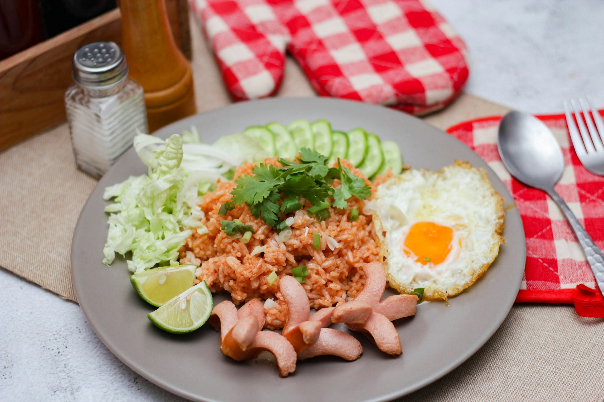

Fried rice is a dish of cooked rice that has been stir-fried in a wok or a frying pan and is usually mixed with other ingredients such as eggs, vegetables, seafood, or meat. It is often eaten by itself or as an accompaniment to another dish.
Historically, fried rice originated in ancient China during the Sui Dynasty (589–618 AD) in the city of Yangzhou. It was created as a practical way to avoid wasting food, as Chinese culture strictly taboos throwing away edible food. Leftover rice from the previous night was stir-fried with leftover pieces of meat and vegetables, seasoned with soy sauce or lard. As Chinese immigrants traveled throughout Southeast Asia, the dish adapted to local palates—leading to famous regional variations like Indonesia's nasi goreng, which uses sweet soy sauce (kecap manis) and shrimp paste (terasi).